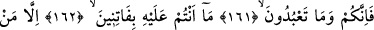
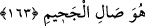
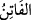
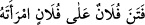
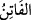
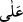
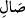
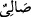
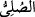

161, 162, 163. Sizler ve taptığınız şeyler! Hiçbiriniz, cehenneme girecek
kimseden başkasını Allah’a karşı azdırıp saptıramazsınız.
Ey müşrikler “Sizler ve” kendilerine “taptığınız şeyler!” ve şeytanlar! “Hiçbiriniz,”
kötü tercihiyle “cehenneme girecek kimseden başkasını Allah’a karşı azdırıp
saptıramazsınız.”
“ burada saptıran, ifsad eden demektir. “ denilir ki “kadını
kocasına isyan etmeye teşvik ederek onu ifsad etti, saptırdı” demektir. “ kelimesi
sevk ve teşvik mânâlarını ihtiva ettiği için “ ile müteaddi olmuştur.
“Hiçbiriniz, cehenneme girecek kimseden başkasını Allah’a karşı azdırıp
saptıramazsınız.” Zira Allah Teâlâ onun kötü tercihi sebebiyle küfür ve inkarda ısrar
edeceğini ve sonunda cehennem ehlinden olacağını bilir. İşte şeytanlar, ancak Allah
Teâlâ’nın cehennem ehlinden olmalarını takdir ettiği kimseleri saptırırlar. Ancak muhlas
kullar, şeytanların ifsat ve saptırmalarından uzaktır. Muhlas kullar sizin kendilerini
fitneye düşürüp Allah Teâlâ’yı nitelediğiniz uygunsuz sıfat ve nitelemelerden uzaktırlar.
“ kelimesinin aslı “’dür ki o da “ kelimesinden ismi faildir. “Ateşe ve
cehenneme girmek” demektir.
Ehl-i sünnet bu âyeti şu konuda huccet kabul etmiştir: Fitneye düşmede şeytanın ilkâ
ve vesvesesi ile müşriklerin mâbudlarının hallerinin bir tesiri yoktur. Müessir unsur,
Allah Teâlâ’nın kaza ve kaderi olup onların şekavet ve bedbahtlığına hükmetmiş
olmasıdır.
Tâbi ki bundan sapık olanın buna mecbur olduğu, sapan ve saptıranın bu fiillerinden
dolayı kınanmayıp sorumlu tutulmayacağı anlamı çıkmaz. Zira onlar, Allah Teâlâ’nın
ilm-i ezelisinde kullarından küfrü tercih edip onda ısrar edecekler dışında kimseyi
saptıramazlar. Allah Teâlâ’nın mükelleflerin fiillerinden bir fiili bilip takdir etmesi ve
ona hükmetmesi kulun tercih ve kesbine mâni değildir.
Kim ki fiilinde dilediği gibi hareket eder
Onun fiili zorlamaktan uzak olur
Bu yüzden kullara emir ve nehiy eyledi
Ki boyun eğenle inat eden ortaya çıksın
Boyun eğmekten muhabbet rıza doğar
Muhâlefet ve inattan kötü hüküm doğar
Me’mur olan kulun fiilleri
Emir ve nehiy ortaya çıkması için şart oldu